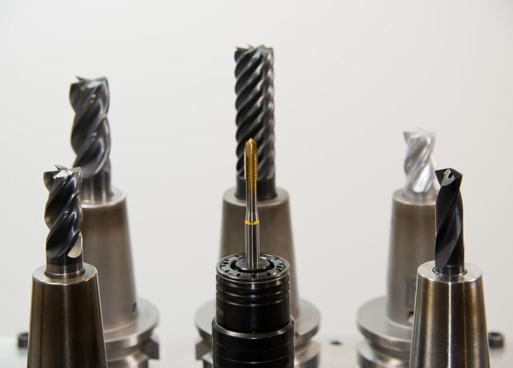

Rev. 2 · 15 abr · leitura de 5 minutos
Furar parede sem arrancar o reboco em volta
Quase todo furo que arranca reboco foi feito com impacto onde nao devia, ou com broca que nao era daquele material.

O furo que arranca um circulo de reboco em volta e quase sempre resultado de impacto ligado em material que nao pede impacto, ou de broca escapando no inicio do furo. Os dois problemas tem solucao barata e rapida.
Material manda na broca e no modo
Concreto e alvenaria pedem broca com ponta de vídea e, no concreto, o modo de impacto. Gesso, drywall e ceramica pedem broca apropriada e, principalmente, impacto DESLIGADO. Ligar impacto em drywall abre um buraco maior que a bucha e elimina a fixacao.
Em azulejo e porcelanato, alem do impacto desligado, vale comecar com rotacao baixa e sem forcar, ate a ponta vencer o esmalte. Depois disso, a broca encontra a massa e o furo anda sozinho.
A fita que segura o inicio
Uma cruz de fita crepe sobre o ponto marcado cumpre duas funcoes: impede a ponta de escorregar antes de morder a superficie e segura o revestimento na borda do furo. E o truque mais barato da lista e resolve boa parte dos furos feios.
Em superficie muito lisa, alem da fita, vale abrir um pequeno ponto de partida com prego e martelo (em alvenaria) ou com punção (em metal). A broca entra centrada e para de caminhar.
Profundidade e limpeza do furo
Marque a profundidade na propria broca com um pedaço de fita: furo mais fundo que o necessario nao ajuda e enfraquece o ponto. Depois de furar, sopre ou aspire o po de dentro do furo. Bucha instalada sobre po fica frouxa e a fixacao afrouxa em semanas.
Um detalhe pratico: entre a bucha e o furo nao deve haver folga perceptivel. Se a bucha entra sozinha, o furo ficou grande; use bucha maior ou refaça o ponto alguns centimetros ao lado.
Antes de furar, olhe o que passa atras
Parede tem tubulacao eletrica e hidraulica, e nem sempre onde a intuicao diz. Como regra geral, o eletroduto costuma descer na vertical a partir de interruptores e tomadas e correr na horizontal proximo a elas. Evite essas faixas.
Existe detector de metal e de tensao a preco acessivel, e ele vale o investimento em qualquer casa onde se fure parede mais de uma vez por ano. Em duvida sobre instalacao eletrica, hidraulica ou de gas, chame um profissional habilitado: este texto trata de acabamento e fixacao, nao de instalacao.
Peso e fixacao
Bucha comum de plastico resolve quadro e prateleira leve. Peso maior (armario aereo, TV, suporte de bicicleta) pede bucha compativel com o material da parede e, em drywall, ancoragem propria ou fixacao no montante metalico. Fixar peso alto so no gesso e o erro que termina com o movel no chao.
Este texto e revisado quando a pratica mostra que a recomendacao nao se sustenta. A revisao vigente esta indicada no topo da folha.